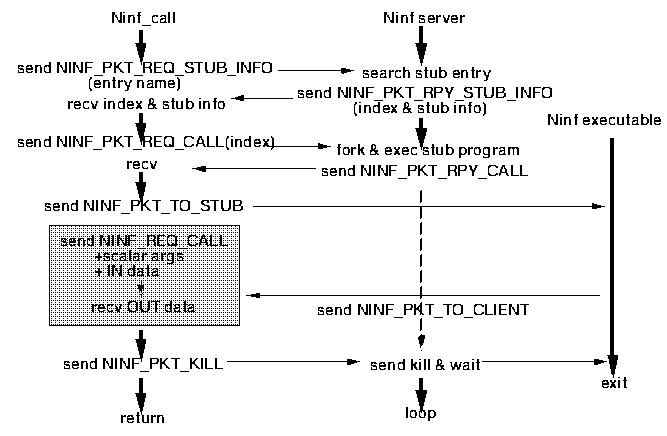

+----------------------------+ | Ninf Executable Protocol | +----------------------------+ | Ninf Server Protocol | +----------------------------+ | TCP/IP | +----------------------------+
Packet is consist of header part and data part. In the header, there are
+---------------------+ -+ | Packet Size | 4 bytes | +---------------------+ | | Packet Code | 4 bytes | +---------------------+ +- Header | Argument 1 | 4 bytes | +---------------------+ | | Argument 2 | 4 bytes | +---------------------+ -+ | | = Data Part = Packet Size - 16 bytes | | +---------------------+Commands(codes) are the following.
NINF_PKT_REQ_STUB_INFO: 4NINF_PKT_RPY_STUB_INFO packet.
+----+-+-+-+---------------------------+ |size|4|X|X| xdr encoded function name | +----+-+-+-+---------------------------+
NINF_PKT_REQ_CALL: 6NINF_PKT_RPY_CALL packet.
+----+-+-----+-+ | 16 |6|index|X| +----+-+-----+-+
NINF_PKT_KILL: 1+----+-+-+-+ | 16 |1|X|X| +----+-+-+-+
NINF_PKT_TO_STUB: 2+----+-+-+-+---------------------------+ |size|2|X|X| executable protocol data | +----+-+-+-+---------------------------+
NINF_PKT_RPY_STUB_INFO: 5NINF_PKT_REQ_STUB_INFO packet.
The function index is stored in arg1 field,
and interface information is stored in data part.
+----+-+-----+-+-----------+ |size|5|index|X| interface | +----+-+-----+-+-----------+
NINF_PKT_RPY_CALL: 7NINF_PKT_REQ_CALL
succeeded.
+----+-+-+-+ | 16 |7|X|X| +----+-+-+-+
NINF_PKT_TO_CLIENT: 3+----+-+-+-+---------------------------+ |size|3|X|X| executable protocol data | +----+-+-+-+---------------------------+
NINF_PKT_ERROR: -1+----+-+-+-+ | 16 |7|X|X| +----+-+-+-+

NINF_PKT_TO_STUB packets.
The NinfServer get the packets, remove headers, and forward
them to the Executable.
Executable sends all the command/data to the NinfServer
using plain stream.
NinfServer cuts it into proper sized packets and put them
NINF_PKT_TO_CLIENT command and forward them
to the client program.
NinfExecutable protocol is a stream based protocol. First, sender sends command which is encoded by 4 bytes XDR format, and then send the command argument, if needed. NinfExecutable commands are as follows.
Client -> Executable
NINF_REQ_STUB_INFO: 2
If succeeded, the command sender will receives
NINF_OK command
followed by the XDR encoded interface information.
NOTE: Usually, clients retrieve the information from the NinfServer, so this command is not used by clients.
NINF_REQ_CALL: 1
On success,
NINF_OK command
followed by the output parameters encoded in the same fashion
is returned.
NINF_REQ_KILL: 3
NINF_ACK_OK: 0
NINF_ACK_ERROR: -1
/* get stub interface */
/* make packet and send */
init_data(DATA);
add_data(DATA, NinfLibraryName);
PKT = make_packet(NINF_PKT_REQ_STUB_INFO, dummy, DATA);
send_pkt(PKT);
/* receive packet and decode */
PKT = receive_pkt();
if (NINF_PKT_RPY_STUB_INFO == get_code(PKT))
interface = decode_stub_interface(get_data(PKT));
index = get_arg1(PKT);
/* index represent the NinfLibrary */
PKT = make_packet(NINF_PKT_REQ_CALL, index, dummy_data);
send_pkt(PKT);
PKT = receive_pkt();
if (get_code(PKT) != NINF_PKT_RPY_CALL){
/* failed */
}
/* request call accepted */
/* setup data for the NinfExecutable */
init_data(DATA);
add_data(DATA, NINF_REQ_CALL);
add_data(DATA, encodeded_parameters);
/* make packet and send */
PKT = make_packet(NINF_PKT_TO_STUB, dummy, encoded_parameters);
send_pkt(PKT);
/* receive packet */
PKT = receive_pkt();
if (get_code(PKT) != NINF_PKT_TO_CLIENT){
/* failed */
}
DATA = get_data(PKT);
if (get_first_data(DATA) != NINF_OK){
/* failed */
}
decode_parameter(get_rest_data(DATA));
This code assumes that the input/output parameters can be
encoded into just one packet.
If the parameter is big enough, you must cut it into several parts,
and put them in several packets.
typedef struct ninf_stub_information
{
int version_major,version_minor; /* protocol version */
int info_type; /* information type */
char module_name[MAX_NAME_LEN]; /* module name */
char entry_name[MAX_NAME_LEN]; /* entry name */
int nparam;
struct ninf_param_desc * params;
int order_type;
NINF_EXPRESSION order;
char * description;
};
'Version_major' and 'version_minor' represent version number
of Ninf Protocol, but is not used currently.
'Info_type' is not used, too.
'Module_name' and 'entry_name' stand for the numerical routine name.
'Nparam' represents number of parameters for the routine.
'Params' is a pointer to the array of parameter structures.
'Order_type' and 'order' represent
order of computation cost.
The following structure 'ninf_param_desc' represents each parameter.
struct ninf_param_desc {
enum data_type param_type; /* argument type */
enum mode_spec param_inout; /* IN/OUT */
int ndim; /* number of dimensions */
struct {
VALUE_TYPE size_type;
int size;
NINF_EXPRESSION size_exp;
VALUE_TYPE start_type;
int start;
NINF_EXPRESSION start_exp;
VALUE_TYPE end_type;
int end;
NINF_EXPRESSION end_exp;
VALUE_TYPE step_type;
int step;
NINF_EXPRESSION step_exp;
} dim[MAX_DIM];
};
'param_type' represents data type of the parameter,
using the enumeration below.
typedef enum data_type
{
UNDEF, /* undefined */
VOID,
CHAR,
SHORT,
INT,
LONG,
LONGLONG,
UNSIGNED_CHAR,
UNSIGNED_SHORT,
UNSIGNED,
UNSIGNED_LONG,
UNSIGNED_LONGLONG,
FLOAT,
DOUBLE,
LONG_DOUBLE,
STRING_TYPE,
FUNC_TYPE,
BASIC_TYPE_END
} DATA_TYPE;
'param_inout' represents I/O mode of the parameter
using enumeration below.
typedef enum mode_spec
{
MODE_NONE = 0,
MODE_IN = 1, /* default */
MODE_OUT = 2,
MODE_INOUT = 3,
MODE_WORK = 4, /* mode for work space */
} MODE_SPEC;
'ndim' represent the number of dimension of the parameter.
If ndim equals zero, the parameter is scalar.
Structure 'dim' stores information on each dimension,
size, range, and stride.
'dim[0]' stores the first(lowest) dimension information
and, 'dim[1]' stores the second dimension, and so on.
Each dimension has size, start point, end point, step(stride). Each of them is represented by a trio below.
VALUE_TYPE XXX_type;
int XXX;
NINF_EXPRESSION XXX_exp;
XXX_type is encoded by the following enumeration.
typedef enum value_type
{
VALUE_NONE = 0, /* default */
VALUE_CONST = 1, /* default, given in constant */
VALUE_IN_ARG = 2, /* specified by IN scalar paramter */
VALUE_BY_EXPR = 3, /* computed by interpreter */
VALUE_OP = 4, /* operation code */
VALUE_END_OF_OP = 5, /* end of expression */
VALUE_ERROR = -1
} VALUE_TYPE;
If XXX_type is VALUE_CONST, value of XXX stands for the trio.
If XXX_type is VALUE_IN_ARG, the value of XXXth parameter stands for the trio.
If XXX_type is VALUE_BY_EXPR, the value of XXX_exp stands for the trio.
XXX_exp is a structure as follows.
typedef struct ninf_expression
{
VALUE_TYPE type[20];
int val[20];
} NINF_EXPRESSION;
Actually, this is 20 pair of type and value.
We encode numerical expression into this structure
using reversed Poland notation.
Here, the type can be VALUE_OP , and it stand for the operator. If the type is VALUE_OP, the val must be on of the follows.
#define OP_VALUE_PLUS 1 /* '+' */ #define OP_VALUE_MINUS 2 /* '-' */ #define OP_VALUE_MUL 3 /* '*' */ #define OP_VALUE_DIV 4 /* '/' */ #define OP_VALUE_MOD 5 /* '%' */ #define OP_VALUE_UN_MINUS 6 /* '-' */ #define OP_VALUE_BEKI 7 /* '^' */
Module sample; Define mmul(long mode_in int n, mode_in double A[n][n+1-1], mode_in double B[n][n+2-3+1], mode_out double C[n*n]) Required "sample.o" CalcOrder n^3 Calls "C" mmul(n,A,B,C);This IDL file makes the interface structure below.
{
0,0,0, "sample","mmul",4,
param_desc,
3,
{ {2,1,4,5,0,0,0,0,0,0,0,0,0,0,0,0,0,0,0,0,},
{0,3,7,0,0,0,0,0,0,0,0,0,0,0,0,0,0,0,0,0,}},
stub_description
};
'param_desc' above is defined as follows.
struct ninf_param_desc param_desc[] = {
{ 5, 1, 0,},
{ 13, 1, 2,{
{ 3, 2, { {2,1,4,1,4,5,0,0,0,0,0,0,0,0,0,0,0,0,0,0,},
{0,1,1,1,2,0,0,0,0,0,0,0,0,0,0,0,0,0,0,0,}},
0, 0, { {0,0,0,0,0,0,0,0,0,0,0,0,0,0,0,0,0,0,0,0,},
{0,0,0,0,0,0,0,0,0,0,0,0,0,0,0,0,0,0,0,0,}},
0, 0, { {0,0,0,0,0,0,0,0,0,0,0,0,0,0,0,0,0,0,0,0,},
{0,0,0,0,0,0,0,0,0,0,0,0,0,0,0,0,0,0,0,0,}},
0, 0, { {0,0,0,0,0,0,0,0,0,0,0,0,0,0,0,0,0,0,0,0,},
{0,0,0,0,0,0,0,0,0,0,0,0,0,0,0,0,0,0,0,0,}},},
{ 2, 0, { {0,0,0,0,0,0,0,0,0,0,0,0,0,0,0,0,0,0,0,0,},
{0,0,0,0,0,0,0,0,0,0,0,0,0,0,0,0,0,0,0,0,}},
0, 0, { {0,0,0,0,0,0,0,0,0,0,0,0,0,0,0,0,0,0,0,0,},
{0,0,0,0,0,0,0,0,0,0,0,0,0,0,0,0,0,0,0,0,}},
0, 0, { {0,0,0,0,0,0,0,0,0,0,0,0,0,0,0,0,0,0,0,0,},
{0,0,0,0,0,0,0,0,0,0,0,0,0,0,0,0,0,0,0,0,}},
0, 0, { {0,0,0,0,0,0,0,0,0,0,0,0,0,0,0,0,0,0,0,0,},
{0,0,0,0,0,0,0,0,0,0,0,0,0,0,0,0,0,0,0,0,}},},
}},
{ 13, 1, 2,{
{ 3, 1, { {2,1,4,1,4,1,4,5,0,0,0,0,0,0,0,0,0,0,0,0,},
{0,2,1,3,2,1,1,0,0,0,0,0,0,0,0,0,0,0,0,0,}},
0, 0, { {0,0,0,0,0,0,0,0,0,0,0,0,0,0,0,0,0,0,0,0,},
{0,0,0,0,0,0,0,0,0,0,0,0,0,0,0,0,0,0,0,0,}},
0, 0, { {0,0,0,0,0,0,0,0,0,0,0,0,0,0,0,0,0,0,0,0,},
{0,0,0,0,0,0,0,0,0,0,0,0,0,0,0,0,0,0,0,0,}},
0, 0, { {0,0,0,0,0,0,0,0,0,0,0,0,0,0,0,0,0,0,0,0,},
{0,0,0,0,0,0,0,0,0,0,0,0,0,0,0,0,0,0,0,0,}},},
{ 2, 0, { {0,0,0,0,0,0,0,0,0,0,0,0,0,0,0,0,0,0,0,0,},
{0,0,0,0,0,0,0,0,0,0,0,0,0,0,0,0,0,0,0,0,}},
0, 0, { {0,0,0,0,0,0,0,0,0,0,0,0,0,0,0,0,0,0,0,0,},
{0,0,0,0,0,0,0,0,0,0,0,0,0,0,0,0,0,0,0,0,}},
0, 0, { {0,0,0,0,0,0,0,0,0,0,0,0,0,0,0,0,0,0,0,0,},
{0,0,0,0,0,0,0,0,0,0,0,0,0,0,0,0,0,0,0,0,}},
0, 0, { {0,0,0,0,0,0,0,0,0,0,0,0,0,0,0,0,0,0,0,0,},
{0,0,0,0,0,0,0,0,0,0,0,0,0,0,0,0,0,0,0,0,}},},
}},
{ 13, 2, 1,{
{ 3, 3, { {2,2,4,5,0,0,0,0,0,0,0,0,0,0,0,0,0,0,0,0,},
{0,0,3,0,0,0,0,0,0,0,0,0,0,0,0,0,0,0,0,0,}},
0, 0, { {0,0,0,0,0,0,0,0,0,0,0,0,0,0,0,0,0,0,0,0,},
{0,0,0,0,0,0,0,0,0,0,0,0,0,0,0,0,0,0,0,0,}},
0, 0, { {0,0,0,0,0,0,0,0,0,0,0,0,0,0,0,0,0,0,0,0,},
{0,0,0,0,0,0,0,0,0,0,0,0,0,0,0,0,0,0,0,0,}},
0, 0, { {0,0,0,0,0,0,0,0,0,0,0,0,0,0,0,0,0,0,0,0,},
{0,0,0,0,0,0,0,0,0,0,0,0,0,0,0,0,0,0,0,0,}},},
}},
};
Let's take a precise look one by one.
The first parameter is represented as follows:
{ 5, 1, 0,},
This means, this parameter type is long(param_type = 5) and scalar (ndim = 0)
and the mode is in (param_inout = 1).
The second parameter is represented as follows:
{ 13, 1, 2,{
{ 3, 2, { {2,1,4,1,4,5,0,0,0,0,0,0,0,0,0,0,0,0,0,0,},
{0,1,1,1,2,0,0,0,0,0,0,0,0,0,0,0,0,0,0,0,}},
0, 0, { {0,0,0,0,0,0,0,0,0,0,0,0,0,0,0,0,0,0,0,0,},
{0,0,0,0,0,0,0,0,0,0,0,0,0,0,0,0,0,0,0,0,}},
0, 0, { {0,0,0,0,0,0,0,0,0,0,0,0,0,0,0,0,0,0,0,0,},
{0,0,0,0,0,0,0,0,0,0,0,0,0,0,0,0,0,0,0,0,}},
0, 0, { {0,0,0,0,0,0,0,0,0,0,0,0,0,0,0,0,0,0,0,0,},
{0,0,0,0,0,0,0,0,0,0,0,0,0,0,0,0,0,0,0,0,}},},
{ 2, 0, { {0,0,0,0,0,0,0,0,0,0,0,0,0,0,0,0,0,0,0,0,},
{0,0,0,0,0,0,0,0,0,0,0,0,0,0,0,0,0,0,0,0,}},
0, 0, { {0,0,0,0,0,0,0,0,0,0,0,0,0,0,0,0,0,0,0,0,},
{0,0,0,0,0,0,0,0,0,0,0,0,0,0,0,0,0,0,0,0,}},
0, 0, { {0,0,0,0,0,0,0,0,0,0,0,0,0,0,0,0,0,0,0,0,},
{0,0,0,0,0,0,0,0,0,0,0,0,0,0,0,0,0,0,0,0,}},
0, 0, { {0,0,0,0,0,0,0,0,0,0,0,0,0,0,0,0,0,0,0,0,},
{0,0,0,0,0,0,0,0,0,0,0,0,0,0,0,0,0,0,0,0,}},},
}},
This shows, this parameter type is double(param_type = 13) and
2 dimensional array (ndim = 2), and mode is 'in' (param_inout = 1).
The following part represent the first dimension of the parameter.
// size { 3, 2, { {2,1,4,1,4,5,0,0,0,0,0,0,0,0,0,0,0,0,0,0,},
{0,1,1,1,2,0,0,0,0,0,0,0,0,0,0,0,0,0,0,0,}},
// start 0, 0, { {0,0,0,0,0,0,0,0,0,0,0,0,0,0,0,0,0,0,0,0,},
{0,0,0,0,0,0,0,0,0,0,0,0,0,0,0,0,0,0,0,0,}},
// end 0, 0, { {0,0,0,0,0,0,0,0,0,0,0,0,0,0,0,0,0,0,0,0,},
{0,0,0,0,0,0,0,0,0,0,0,0,0,0,0,0,0,0,0,0,}},
// step 0, 0, { {0,0,0,0,0,0,0,0,0,0,0,0,0,0,0,0,0,0,0,0,},
{0,0,0,0,0,0,0,0,0,0,0,0,0,0,0,0,0,0,0,0,}},},
The first 3 means, the 'size' is expressed by a expression.
As you can see in the original IDL file,
the original expression is 'n + 1 - 1'.
In reversed Poland notation, it is represented as 'n 1 + 1 -'.
{2,1,4,1,4,5,0,0,0,0,0,0,0,0,0,0,0,0,0,0,}
{0,1,1,1,2,0,0,0,0,0,0,0,0,0,0,0,0,0,0,0,}
represent the expression. Each column makes a pair.
[2,0] means 0th parameter of the interface, namely "n".
[1,1] represent constant '1', [4,1] represent a operator
'+' and [4,2] represent '-'.
The last pair, [5,0] is just a expression terminator.
trans_int(version_major);
trans_int(version_minor);
trans_int(info_type);
trans_string(module_name);
trans_string(entry_name);
trans_int(nparam);
for (int i = 0; i < nparam; i++){
trans_enum(params[i]->param_type);
trans_enum(params[i]->param_inout);
trans_int (params[i]->ndim);
for (int j = 0; j < params[i]->ndim; i++){
trans_enum(((params[i]->dim)[j]).size_type);
trans_int (((params[i]->dim)[j]).size);
if (((params[i]->dim)[j]).size_type == VALUE_BY_EXPR)
for (int k = 0; k < NINF_EXPRESSION_LENGTH; k++){
trans_int(((params[i]->dim)[j]).size_exp.type[k]);
trans_int(((params[i]->dim)[j]).size_exp.val[k]);
}
trans_enum(((params[i]->dim)[j]).start_type);
trans_int (((params[i]->dim)[j]).start);
if (((params[i]->dim)[j]).start_type == VALUE_BY_EXPR)
for (int k = 0; k < NINF_EXPRESSION_LENGTH; k++){
trans_int(((params[i]->dim)[j]).start_exp.type[k]);
trans_int(((params[i]->dim)[j]).start_exp.val[k]);
}
trans_enum(((params[i]->dim)[j]).end_type);
trans_int (((params[i]->dim)[j]).end);
if (((params[i]->dim)[j]).end_type == VALUE_BY_EXPR)
for (int k = 0; k < NINF_EXPRESSION_LENGTH; k++){
trans_int(((params[i]->dim)[j]).end_exp.type[k]);
trans_int(((params[i]->dim)[j]).end_exp.val[k]);
}
trans_enum(((params[i]->dim)[j]).step_type);
trans_int (((params[i]->dim)[j]).step);
if (((params[i]->dim)[j]).step_type == VALUE_BY_EXPR)
for (int k = 0; k < NINF_EXPRESSION_LENGTH; k++){
trans_int(((params[i]->dim)[j]).step_exp.type[k]);
trans_int(((params[i]->dim)[j]).step_exp.val[k]);
}
}
}
trans_enum(order_type);
if (order_type == VALUE_BY_EXPR)
for(int k = 0; k < NINF_EXPRESSION_LENGTH; k++){
trans_int(order.type[k]);
trans_int(order.val[k]);
}
trans_string(description);
In the Client -> Executable communication, all scalar parameters should be encoded and sent to the executable in advance of non-scalar parameters. The reason is scalar parameters may be used to specify the size of non-scalar parameters.
For arrayed parameters, if start, end, or step are specified, only the specified part of the array should be transferred.